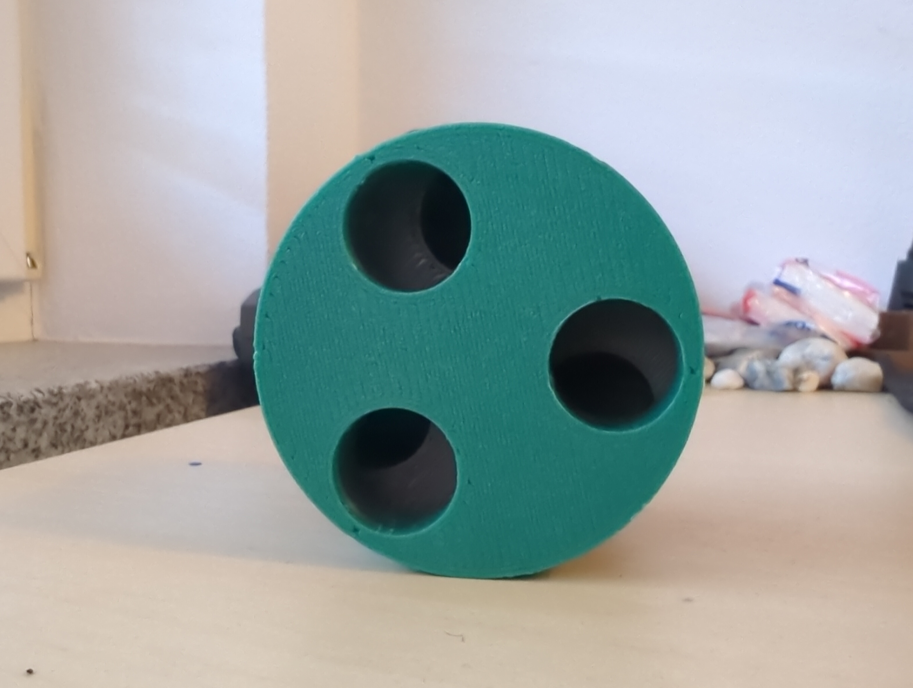
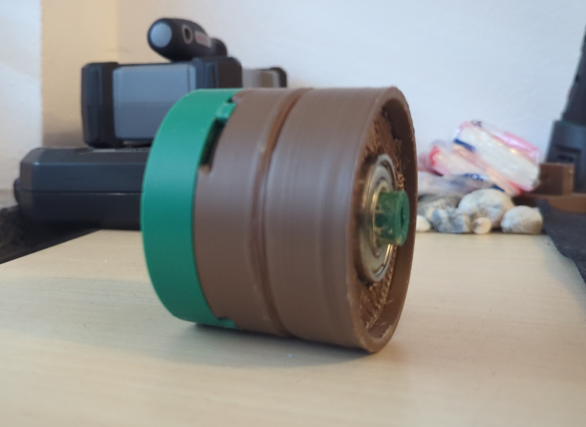

Phase II
Recovery system
In order to deploy our big parachute to save the rocket from crashing straight into the ground, we needed some sort of system to blow the rocket apart (without destroying it) and giving the parachute the necessary impulse to fold open and stop the free fall. Ideally, this would be digitally controlled to deploy at a specific altitude. It also needed to be as reliable as possible, meaning few moving parts and a simple mechanism.
Linear motors
Motors pushing out the engine/fin mount, which would be attached to the parachute. A simple idea, purely reliant on the motors working. It seemed very fitting, we encountered multiple downsides to it:
First of all, we had to ensure the parachute would not get caught on the motors, which would either stop it from unfolding or rip the lines connecting it to the fuselage. The solution we found where smooth covers for the motors that we could 3D-print and attach to either the motors or to the fuselage directly.
Another problem was power usage. Strong linear motors typically require more than the 3.7V provided by LiPo batteries. This meant we needed to find a strong power source of around 12V that would occupy as little space as possible. Luckily, we solved this alongside the same issue we encountered with our despin system. We found little 12V batteries from Amazon that were almost smaller and lighter than even the smallest MPUs we had on hand.
The last issue was the arrangement. For the mechanism to work, the linear motors would need to be at the bottom of the rocket, right above the engine/fin mount, securely attached to the inside of the fuselage. Right where the parachute also needed to be. Namely, a very big parachute rated for up to 5kg. Not much of a problem tho, assuming you can find the right size for the motors. Long story short: We didn't.
CO2 canisters and springs
The inspiration from this came from a commercially available solution, the so-called "raptor recovery module" for model rocketry. It releases the pressure from small CO2 capsules into the fuselage in one short burst. The gas escapes through the path of least resistence, flowing through the parachute and ejecting it out into the air. Since we did not have the budget or the weight capacity to use this one directly, we had to figure out a way to build it ourselves. As always, we encountered some issues.
First up was opening the canisters. The inspiration uses small explosives that launch a pointy bit at the tin cap of the CO2 capsule with enough energy to burst it open. A limitation imposed by safety guidelines for german schools restricted us from using any form of explosive, no matter how safe it might me. Our teacher was (understandably) unwilling to take the risk, meaning we had to find an alternative way to generate that amount of energy. What we ended up with were springs released by a servo motor that also launch a pointy bit toward the capsule. We felt so confident in this idea that we designed and printed multiple prototypes for the release mechanism.

Fig 1: Final version of the ejection module, Front

Fig 2: Final version of the ejection module, Side/back
Next up where the springs themselves. We could not find a consumer-grade solution, so we figured we had to resort to industrial providers to get a spring in the form factor and force category we needed. None of them were willing to sell under three-digit amounts tho, so we had to rethink the whole thing. At some point, one of the students had the amazing idea to use springs from nerf blasters. Specifically, the upgrade springs that you could get for older generations. They provided all the force we needed, around 10-12N, were reasonably priced, available in low quantity and fit our form factor. Perfect.
The issue that stopped us from using this approach? Our partner, the DLR. Since none of us were qualified engineers and their engineers were not exactly thrilled about some students attempting something like this, we were not allowed to put this into the rocket they would end up launching. Disappointing, but fair reasoning.
Ejection charges
Another feature of the solid propellant engines we use for our rockets is the ejection charge. A small, secondary, delayed charge that generates enough impulse to split apart the small rockets at designated points and deploy their parachutes. Not even close to being enough for the big rocket. However, since we use multiple engines to lift the rocket up, we could also use more than one with an ejection charge. After some minor modifications to our engine/fin mount, we ended up with two holes that went through into the fuselage. Perfect for two ejection charges to blast through and propel the entire mount out of the rocket. A reliable delay, few moving parts, no additional cost and strong enough. The only downside was no electronic control over deploying them, but this same caveat brought the bonus of not needing to squeeze another MPU with its own battery into the lower fuselage. For all these benefits and very little downsides, this is what we went with.